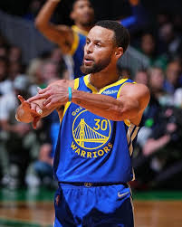

Stephen Curry — Golden State Warriors
Stephen Curry (n. 1988) este considerat cel mai bun shooter din istoria NBA. A schimbat modul în care se joacă basketul, punând accent pe eficiența de la distanță și pe ritmul ofensiv.
PPG
24.6
3P%
42.8%
APG
6.5
Realizări notabile
- 4× NBA Champion
- 2× NBA MVP (inclusiv un MVP unanim)
- Multiple selecții All-Star și All-NBA
Cronologie
2009: Draftat de Golden State Warriors.
2015–2018: Contribuie la dominantele campanii ale Warriors și câștigă mai multe titluri.
2022: Revine în prim-plan și câștigă încă un titlu cu Warriors.